Overview
At Woori Financial Group, I worked on cloud based data engineering and AWS infrastructure for financial
services. My focus was on building reliable and scalable systems that could support high traffic workloads,
automated deployment, and efficient cloud operations. This experience strengthened my ability to work
across both data engineering and cloud platform architecture.
Key Responsibilities
-
Designed a high availability AWS architecture to support production grade financial systems under
heavy request volume.
-
Built automated CI and CD workflows using GitHub, Jenkins, ECR, and ArgoCD to improve deployment
and operational reliability.
-
Optimized cloud infrastructure using Auto Scaling, Load Balancers, and RDS Multi AZ configurations.
-
Supported data management and analytics related infrastructure in a banking and financial services
environment.
Achievements
-
Helped achieve zero downtime under 10,000 requests by contributing to a fault tolerant and highly
available AWS architecture.
-
Reduced infrastructure costs by 25 to 35 percent through cloud architecture optimization.
-
Built hands on experience in cloud systems, DevOps workflows, and large scale data infrastructure
in a real financial environment.
AWS
Data Engineering
CI/CD
Jenkins
ArgoCD
Cloud Infrastructure
Portfolio
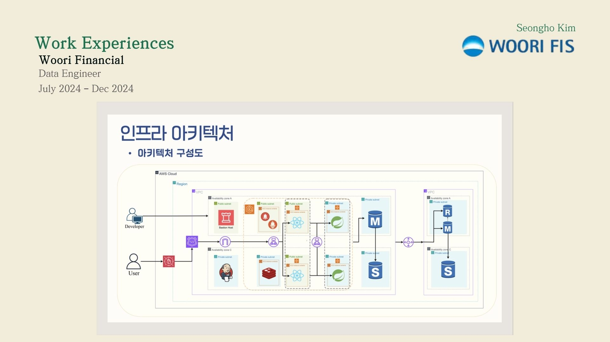
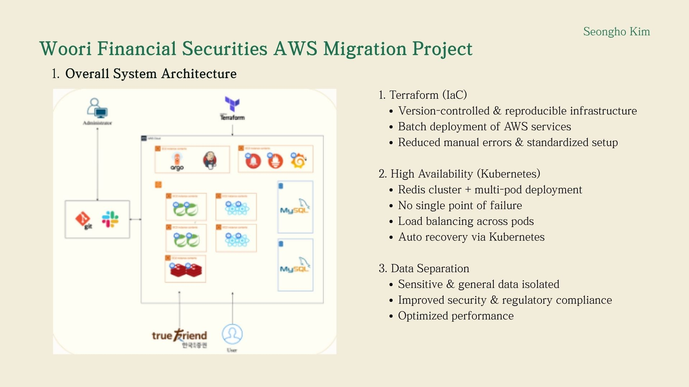
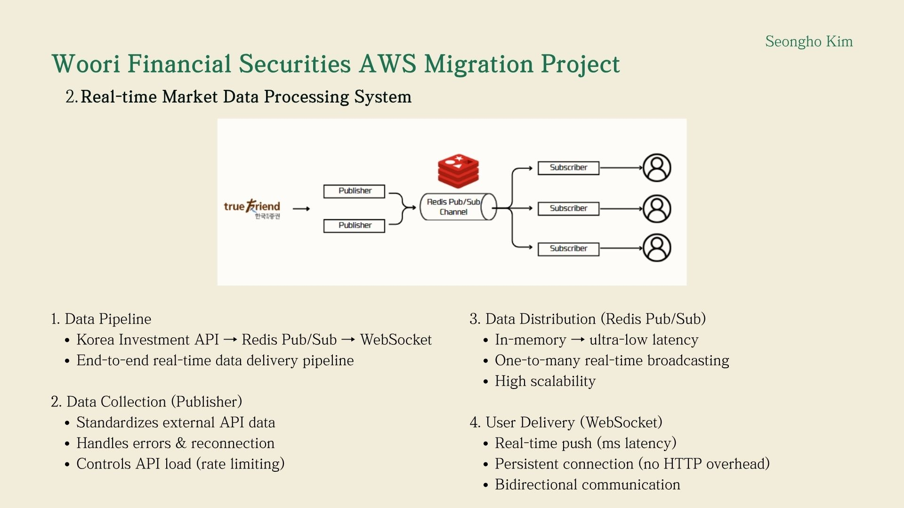
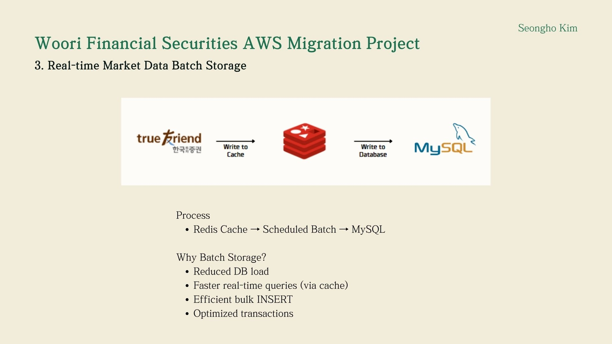
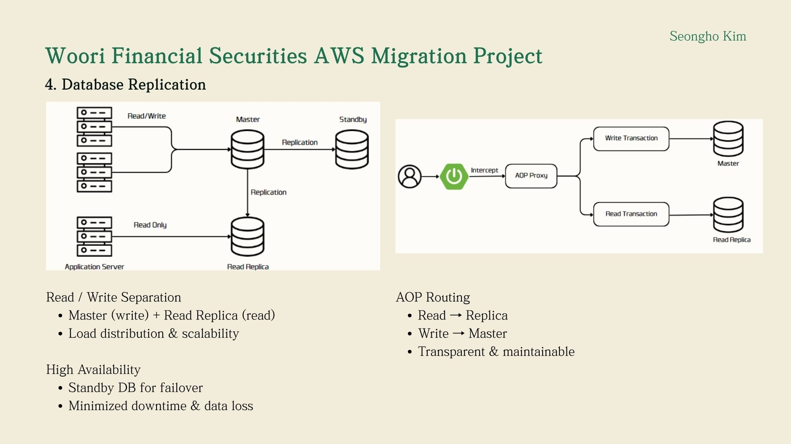
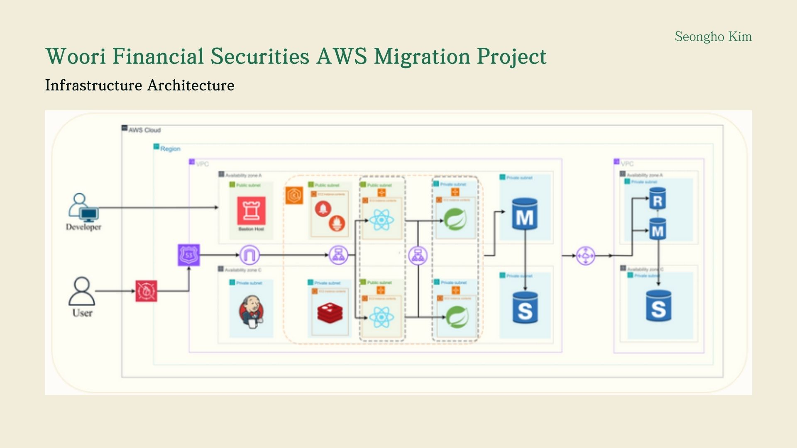
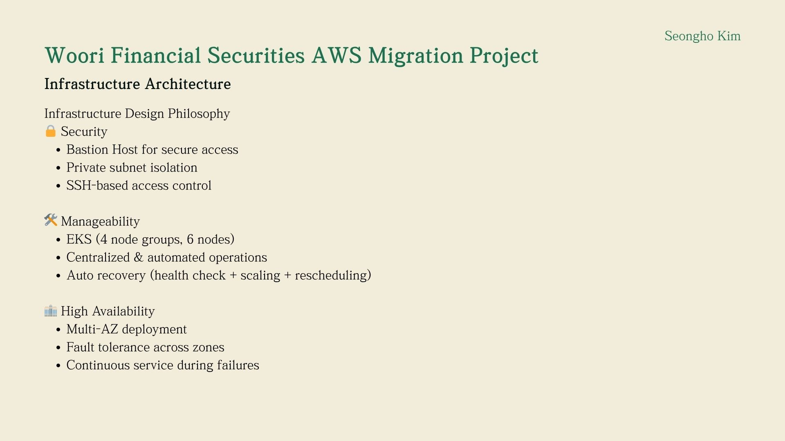
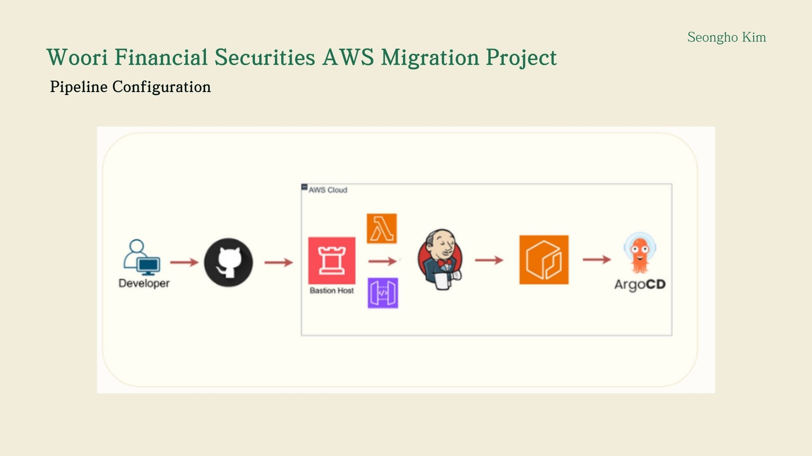
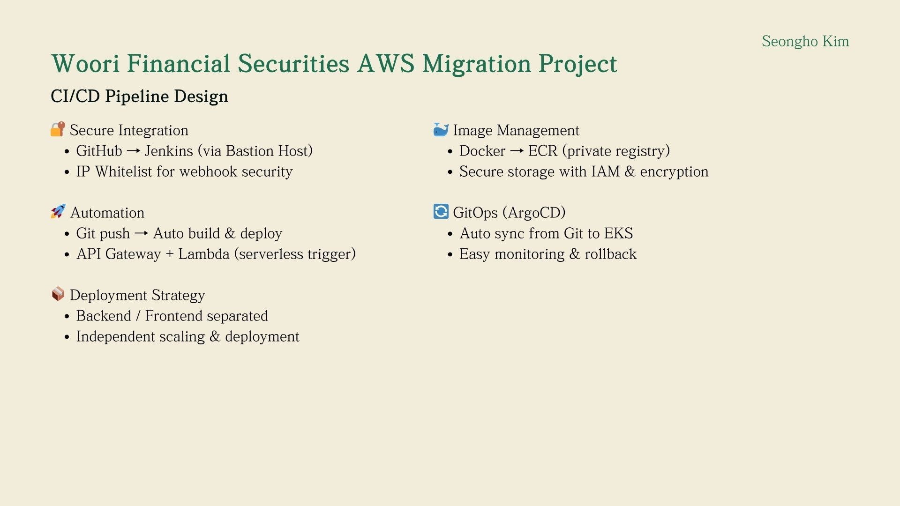
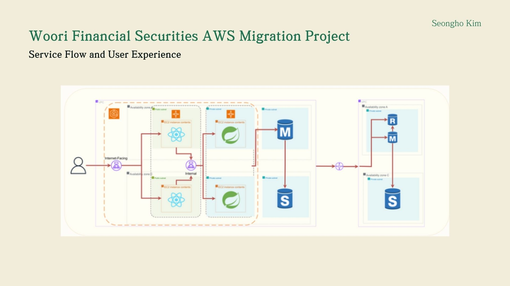
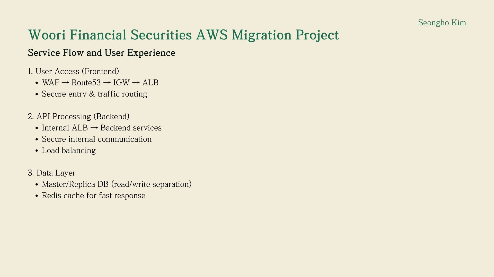
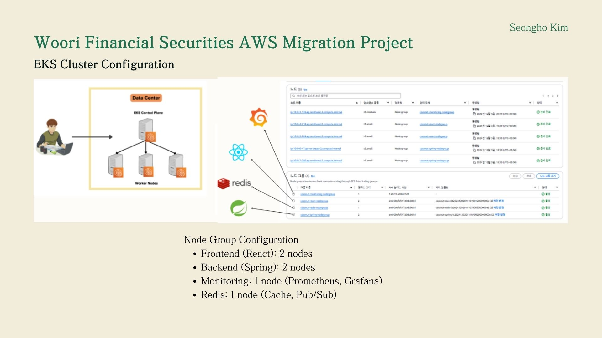
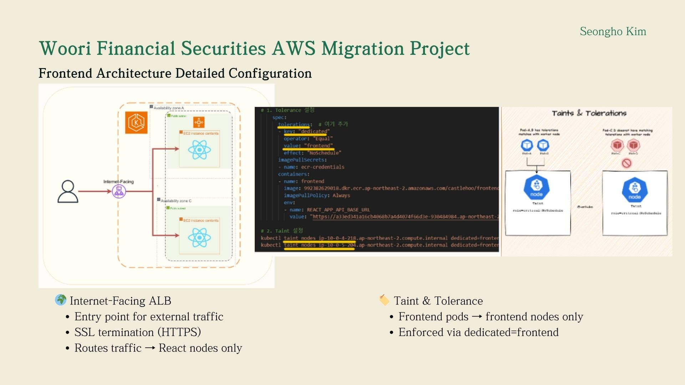
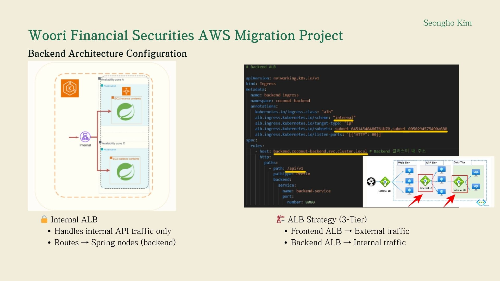
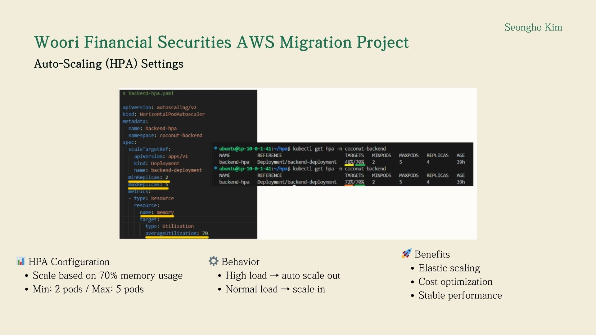
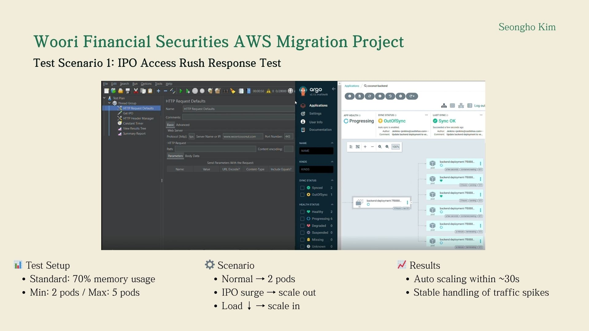
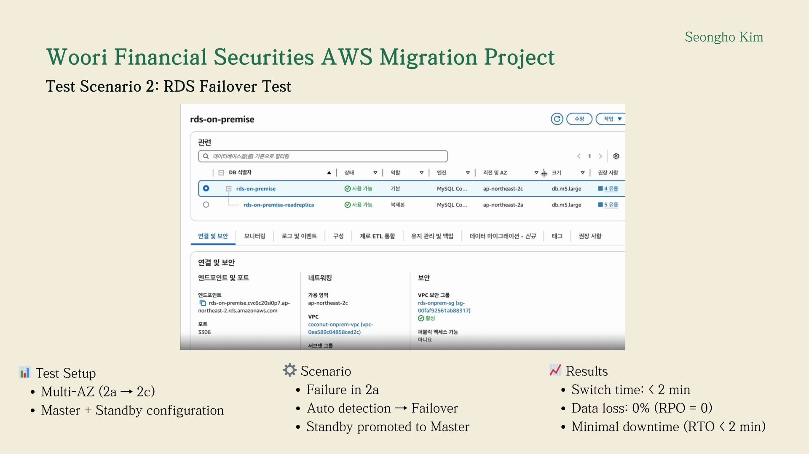